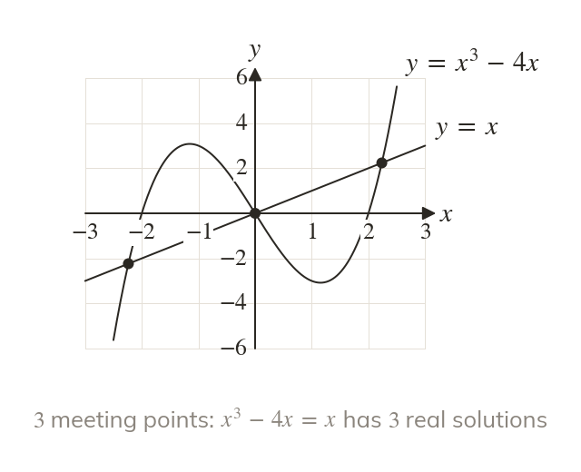
Meeting points are solutions
Where and meet, So the number of meeting points is the number of real solutions of
Where two graphs meet, their equations are equal, so a sketch counts the solutions of an equation and algebra finds them. The rest of the chapter moves graphs by translations and stretches, and the meeting points move with them.
Work down the page at your own pace. Write every answer in your book first, then click to check it.
Read each card, then follow the worked examples one step at a time.

Where and meet, So the number of meeting points is the number of real solutions of
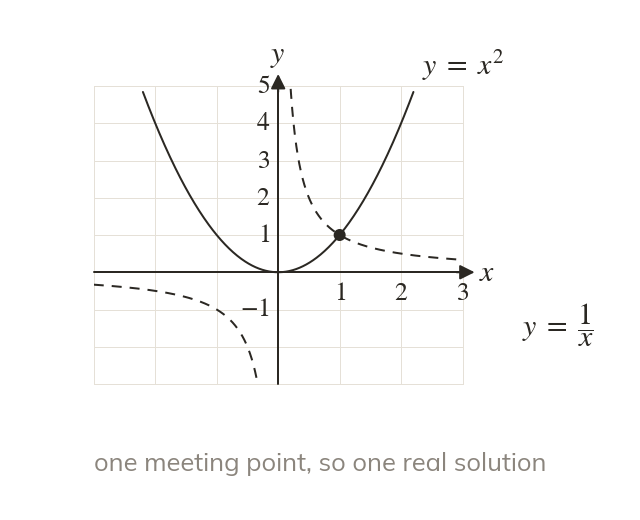
and meet only once, in the first quadrant. So which is has one real solution.
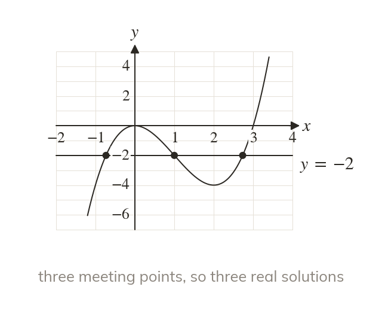
To count the solutions of sketch and the line
The line meets the curve three times, so there are three real solutions.
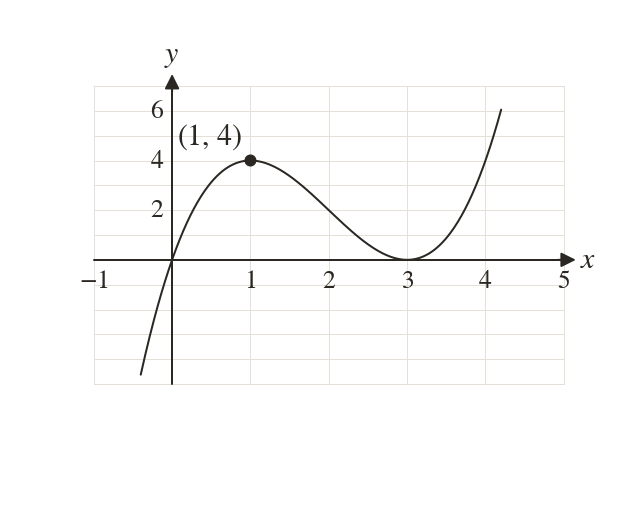
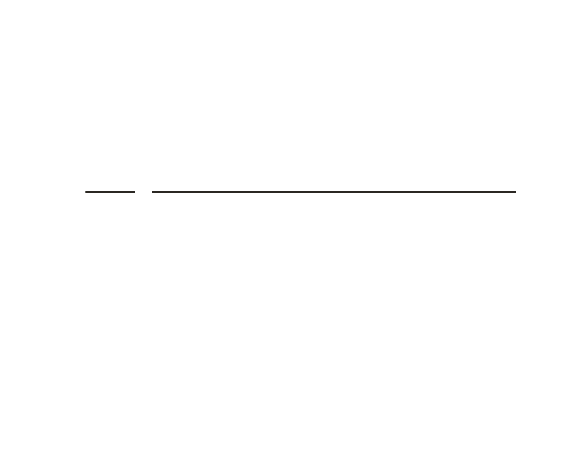
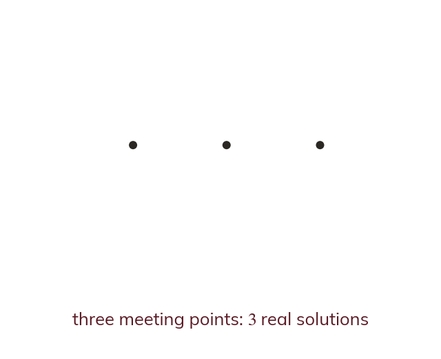
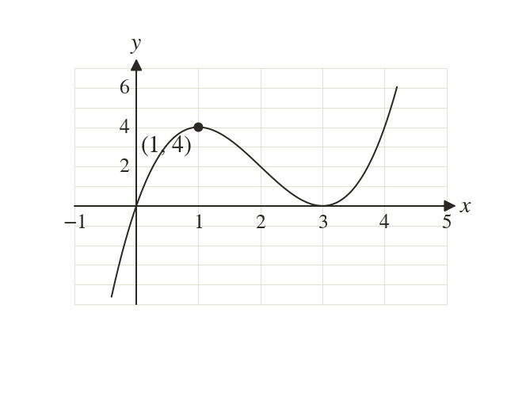
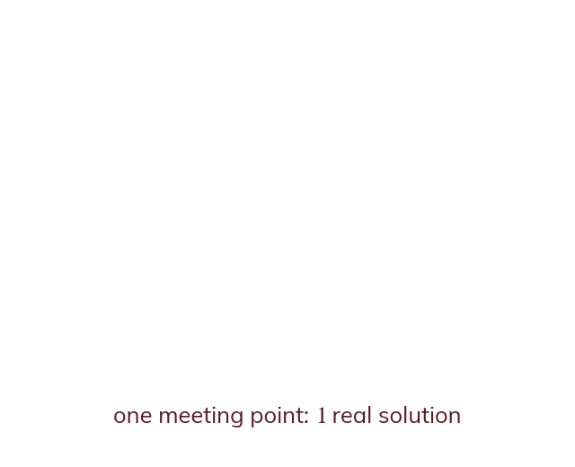
Pick an answer. If it's wrong, the feedback tells you which mistake it was.
Write the blanks in your book first, then tap each one to check.
Read each card, then follow the worked examples one step at a time.
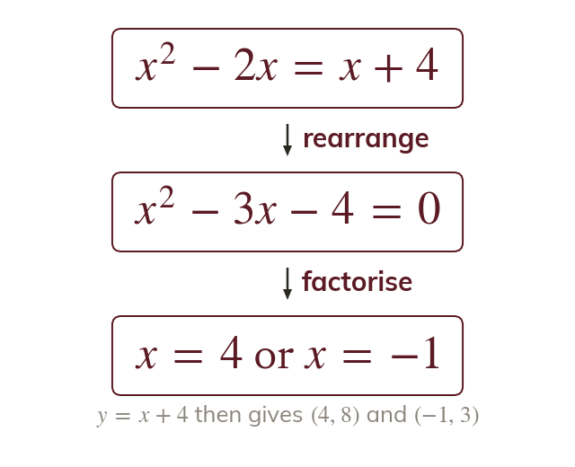
At a meeting point the two y-values are equal. Solve for then substitute to find each y.
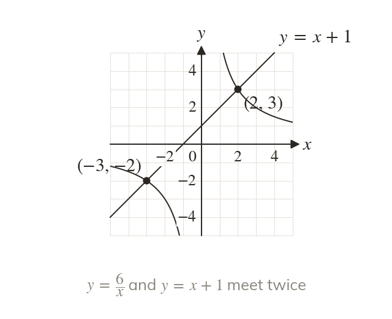
For and multiply by to get
So or giving and
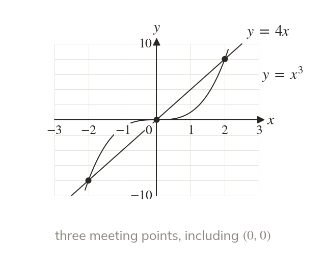
has the solution
Write so and the graphs meet three times.
Pick an answer. If it's wrong, the feedback tells you which mistake it was.
Write the blanks in your book first, then tap each one to check.
Finished? Next lesson: 4.7 Transforming Functions.
For each skill, tap the one that is true for you today. Your Revise pages start with anything you mark Not yet.
Your ratings are saved on this device only.
Log in, then search for a code to practise that skill.